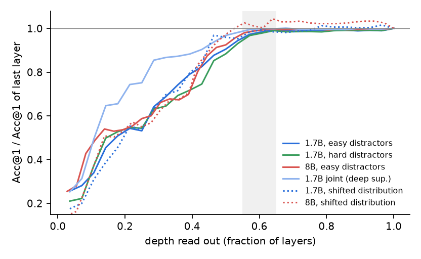
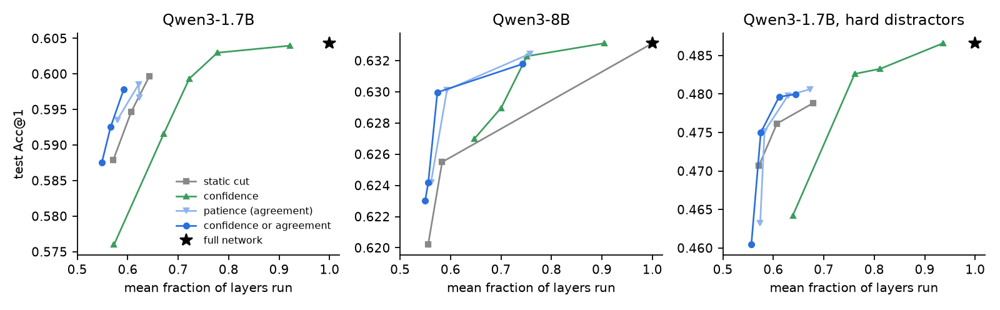
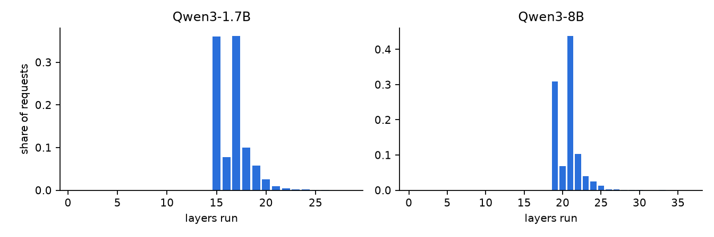
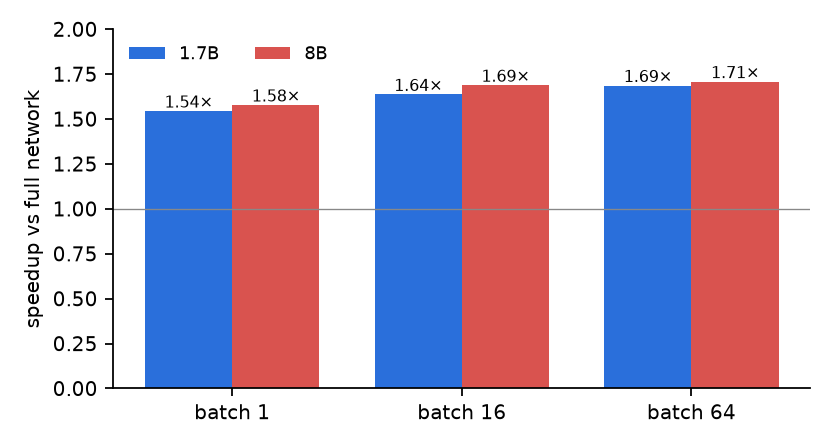

A Jev-style decision model never writes text. It reads a state, answers a typed question (here a Choice among K options) and returns a calibrated probability for every option in one forward pass. The probabilities are meant to be acted on: automate the decisions that are confident enough, escalate the rest.
If the answer is one decision, does the model need all of its layers to reach it? The idea here is simple: put a decision head on every layer, so every layer emits its own distribution over the options, and let a request leave the network when the decision is settled: either one read is very confident, or the top option has stayed the same for several layers in a row. Because the unit of work is one decision over all options, a finished request just leaves the batch. There is no half-built KV cache for later tokens, which is what makes early exit painful in text generation.
The decision task is a 20-way next-choice question: given the text of a person's 20 most recent choices (with ratings), which of 20 options do they pick next? One option is their actual next choice; the other 19 are distractors they never picked, drawn at random (easy) or in proportion to how often everyone picks them (hard, which removes the "just pick the popular one" shortcut). We build it from MovieLens-1M because it gives many independent requests with a ground-truth answer (6,040 test decisions) and a natural distribution shift in a later snapshot. The decision models are Qwen3-1.7B (28 layers) and Qwen3-8B (36 layers), fine-tuned with LoRA as Jev-style choice models; the metric is top-1 decision accuracy (Acc@1), plus calibration (ECE).
For every layer l we add a head w_l·norm(h_l) + b_l on each option's last token, read
through the model's own final RMSNorm (a task-specific tuned lens), plus one temperature per layer fitted on validation.
The exit rule is
exit at layer l if p_max(l) ≥ τ_hi # one very confident read
or top option unchanged for m layers and p_max(l) ≥ τ_lo # it stopped moving
which is the classic confidence exit (BranchyNet, DeeBERT) or'ed with the patience exit of PABEE. We search τ, m and the earliest allowed exit layer on validation, keep the cheapest rule within an accuracy budget, and score it once on test. Two ways to get the heads:

Acc@1 of each layer's head divided by the last layer's. Every curve flattens between 55% and 65% of the depth (shaded). Dotted: heads applied unchanged under distribution shift.
The curves rise through the middle of the network and then stop. The 1.7B model reaches 0.600 after 18 of 28 layers against 0.604 for all 28; the 8B model 0.626 after 21 of 36 against 0.633; with hard distractors it is 0.482 after 18 layers against 0.487. Joint training (light blue) pulls the early layers up a lot (0.51 vs 0.39 after 8 layers) but does not move the point where the curve flattens, and it costs 0.9 points at the last layer. So the retrofit heads are the recipe: minutes of training, and the original model stays available bit for bit.

Test Acc@1 against the mean fraction of layers run, one point per validation budget. Star: full network.
| model | rule (budget) | layers run | speedup | test Acc@1 | Δ vs full [95% CI] |
|---|---|---|---|---|---|
| 1.7B | full network | 100% | 1.00× | 0.604 | – |
| confidence only (0.25) | 78% | 1.29× | 0.603 | −0.13 [−0.26, +0.03] | |
| static cut (0.25) | 64% | 1.56× | 0.600 | −0.46 [−1.06, +0.15] | |
| confidence or agreement (0.25) | 59% | 1.69× | 0.598 | −0.65 [−1.21, −0.07] | |
| 8B | full network | 100% | 1.00× | 0.633 | – |
| confidence only (0.25) | 75% | 1.33× | 0.632 | −0.08 [−0.23, +0.07] | |
| static cut (0.25) | 58% | 1.71× | 0.626 | −0.76 [−1.29, −0.18] | |
| confidence or agreement (0.25) | 57% | 1.74× | 0.630 | −0.31 [−0.79, +0.22] |
Budgets are the accuracy drop (in points) allowed on validation; the test drop is usually a bit larger, the ordinary valid/test gap. Calibration survives: ECE stays at 0.016–0.023 because each exit layer has its own temperature.
This is where the story gets less exciting. Compare each adaptive rule with a static cut that runs at least as many layers, on the same requests:
| run (budget) | adaptive: layers / Acc@1 | static: layers / Acc@1 | difference [95% CI] |
|---|---|---|---|
| 1.7B (0.25) | 16.6 / 0.598 | 17 / 0.595 | +0.31 [−0.05, +0.68] |
| 1.7B (0.5) | 15.9 / 0.593 | 16 / 0.588 | +0.46 [+0.10, +0.83] |
| 8B (0.25) | 20.7 / 0.630 | 21 / 0.626 | +0.46 [+0.10, +0.84] |
| 8B (0.5) | 20.0 / 0.625 | 21 / 0.626 | −0.12 [−0.58, +0.31] |
| 1.7B hard distractors (0.25) | 17.1 / 0.480 | 18 / 0.482 | −0.22 [−0.63, +0.18] |
| 1.7B joint (0.25) | 16.4 / 0.594 | 17 / 0.595 | −0.12 [−0.36, +0.13] |

Where requests exit under the 0.25-point rules. Almost everything leaves in a 2–3 layer band.
The histogram explains it. The chosen rules exit 72% (1.7B) and 82% (8B) of requests within two or three layers of the earliest allowed exit, with a thin tail of late ones. The rule mostly learns where the network is done, and only then does a little per request. Per-request difficulty does exist: an oracle that stops each request at the first layer after which its decision never changes would run 2.0–2.9× fewer layers at no loss. Simple rules on the readout distribution do not find that room. If you are writing an early-exit paper for decision workloads, report the static cut.
We took everything (model, heads, exit rule and temperatures) and applied it unchanged to a later snapshot of the task, where 40% of the correct options never occur in the training data (610 requests).
| model | rule, unchanged | layers run | test Acc@1 | Δ vs full [95% CI] |
|---|---|---|---|---|
| 1.7B | full network | 100% | 0.525 | – |
| confidence or agreement (0.25) | 61% | 0.523 | −0.16 [−1.97, +1.64] | |
| 8B | full network | 100% | 0.593 | – |
| confidence or agreement (0.25) | 58% | 0.613 | +1.97 [+0.16, +3.77] |
The exit costs carry over. And for the 8B model, every one of layers 20–35 beats layer 36 under the shift (dotted red in the first figure): the last layers have specialised to the training distribution, and stopping early avoids that ("overthinking", in the words of Shallow-Deep Networks). With 610 requests this is a hint rather than a result, but a nice one: the cheaper decision is also the more general one.

Median latency ratio on one B200, bf16, merged LoRA, same batches for both paths.
Exits are real: after each checked layer, finished rows are dropped from the hidden states, mask, positions and rotary tables. Without any exits the layer-by-layer loop is as fast as the stock forward pass, so the speedup tracks the layer count, minus one host synchronisation per checked layer (which is why batch 1 gets 1.54× against 1.77× in layers).
git clone https://github.com/wdlctc/jev-exit && cd jev-exit pip install -e ".[dev]" && python -m pytest -q tests # exit == offline replay, CPU bash scripts/run.sh # decision model, heads, rules, shift, wall clock python scripts/plot.py results figures